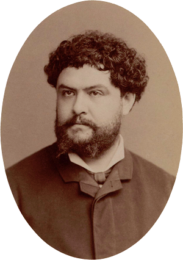

Chanson des cloches de baptême
Philistins, épiciers
A song of baptism bells
Self-righteous well-to-do
Jean Richepin [1] (Chanson des Gueux, 1876)
Musique de Georges Brassens (1957)
Musique de Georges Brassens (1957)
|
|
Notes:
|
[1] Auguste-Jules, alias Jean Richepin, 1849-1926 was a French poet, novelist and playwright. In his youth, he completed a brilliant secondary education. In 1866, he discovered the Parisian Latin Quarter, where he was quickly noticed for his eccentricities. He entered the Ecole Normale Supérieure in 1868, before obtaining a Bachelor of Arts in 1870. After four years of wandering, as a journalist, teacher, sailor, docker, in 1875 he founded with Raoul Ponchon the "Groupe des Vivants", a small cenacle of poets of the Latin Quarter . Inspired by the works of Baudelaire and Jules Vallès, they rejected social and cultural conventions and celebrated instinct. In 1876, the public discovered Jean Richepin with The Beggars' Song which immediately earned its author a trial for contempt of good morals. It ended up with a month in prison, which contributed to his notoriety. Richepin was the author of other collections whose obvious aim was to scandalize the bourgeoisie, - they earned him the nickname "Fake Lucretius" -. He also wrote plays and popular novels that have fallen into oblivion. This skilful poet was to die as a great bourgeois, elected in 1908 to the French Academy, then mayor of a town where he lived in a castle, thus demonstrating that he was above all a great "rhetorician". [2] Richepin is one of those little-known poets that Brassens allowed a broad audience to (re)discover. From the "Song of Baptism Bells", taken from the collection "The Beggars' Song", Brassens extracted the last 6 stanzas which stigmatize the self-righteousness of the bourgeois punished by their own children, who are cherished by the Muses, not by Mercury, the god of tradesmen and thieves. Furthermore, Brassens composed an air in a 2-beat tempo where the third line of each stanza is not repeated, as in the model. This tune replaced another melody, well-known in France: "Le Carillon de Vendôme" (Vendome Chime). [3] Stanza 1 consists in a quatrain with flat rhymes, of which the third feminine rhyme verse is sung twice. This pattern, applied by Richepin throughout his poem, is taken from one of the oldest known French songs, a "voix-de-ville" (i.e. "voice-of-the-town", hence the word "vaudeville") dating from the 15th century, called "Le Carillon de Vendôme". It is possible to date this song precisely from the first couplet, omitted by Richepin, which lists the last possessions conceded to Dauphin Charles VI, in 1420, by the Treaty of Troyes, an episode of the Hundred Years War (1337-1453). The rest of the kingdom of France was bestowed on Henry V of England: Now what is left, O my friends In our gentle Dauphin's hands? Orleans....Vendôme. Bourges is absent from the song. It is however this city which earned King Charles VII the nickname of "Little king of Bourges". It was he who, crowned in Reims in the presence of Joan of Arc in 1429, was to be celebrated as "Charles the Victorious". The second of the two stanzas skipped by Brassens does not belong to the traditional rhyme any more than the following ones. Richepin explains therein the internal logic of his poem. The bells, tired of ringing the hours in evoking the Hundred Years War, pass without transition to a topical subject: a lampoon on the bourgeois. Since the bells are styled "baptism bells", the mockery is about the keen expectations of these philistines, concerning their newborn heirs, that will be disappointed later on . [4] The "unmatched rhymes" : In verse 6, Brassens replaced "Au monde" with "sur terre" which rhymes with "Notaires" in the previous verse. In doing so, he does not comply with a choice made by Richepin to end each stanza with an "unmatched" rhyme. Maybe he instinctively rediscovered the original phonetic structure of the "Carillon de Vendôme" which, in certain versions, reads as follows: Now what is left, O my friends/ In our gentle Dauphin's hands/ Of his kingdom? (=royAUME) Orleans, Beaugency,/ Our Lady's church at Cléry/ VendÔME. |
[1] Auguste-Jules dit Jean Richepin, 1849-1926 est un poète, romancier et dramaturge français. Dans sa jeunesse, il fait de brillantes études secondaires. En 1866, il découvre le quartier latin, où il se fait très vite remarquer par ses excentricités. Il intègre l'École normale supérieure en 1868, avant d'obtenir une licence ès lettres en 1870. Avec quatre années d'errance, comme journaliste, professeur, matelot, docker, en 1875 il fonde avec Raoul Ponchon le "Groupe des Vivants", petit cénacle poétique du Quartier Latin. Inspiré par les uvres de Baudelaire et Jules Vallès, il rejette les conventions sociales et culturelles et célèbre linstinct. En 1876, le public découvre Jean Richepin avec La Chanson des Gueux qui vaut immédiatement à son auteur un procès pour outrage aux bonnes murs qui lui vaut un mois de prison, ce qui va contribuer à sa notoriété. Richepin fut l'auteur d'autres recueils dont le but évident était de scandaliser la bourgeoisie et qui lui valurent le surnom de «Lucrèce de foire», de pièces de théâtre et de romans populaires tombés dans l'oubli. Cet habile poète finira dans la peau d'un grand bourgeois, élu en 1908 à l'Académie française, puis maire d'une commune où il occupe un château, démontrant qu'il fut avant tout un grand "rhétoricien". [2] Richepin est un de ces poètes méconnus que Brassens aura permis au public de (re)découvrir. De la "Chanson des cloches de Baptêmes", tirée du recueil "La Chanson des Gueux", il extrait les 6 dernières strophes qui stigmatisent le pharisaïsme des bourgeois punis par leurs propres rejetons, lesquels sont chéris des muses, et non de Mercure, le dieu des commerçants et des voleurs. En outre, Brassens compose un air à 2 temps où le troisième vers n'est pas répété comme dans le modèle. Cet air se substitue à une mélodie très connue en France: "Le Carillon de Vendôme". [3] La strophe 1, quatrain à rimes plates, dont le troisième vers à rime féminine est répété selon un schéma repris par Richepin jusqu'à la fin de son poème, est tirée d'une des plus anciennes chansons françaises connues, une "voix-de-ville" (d'où le mot "vaudeville") datant du XVème siècle, appelée "Le Carillon de Vendôme". Ce qui permet de dater ce chant est le premier distique, omis par Richepin, qui énumère les dernières possessions concédées au dauphin Charles VI, en 1420, par le traité de Troyes, un épisode de la guerre de Cent ans (1337-1453). Le reste du royaume de France était adjugé à Henri V d'Angleterre: Mes amis, que reste-t-il A ce Dauphin si gentil? Orléans.... Vendôme. Bourges est absente de la chanson. C'est pourtant cette ville qui valut à Charles VII d'être surnommé le "petit roi de Bourges", lui qui, sacré à Reims en présence de Jeanne d'Arc en 1429, allait devenir "Charles le Victorieux". La seconde des deux strophes sautées par Brassens n'appartient pas plus à la comptine traditionnelle que les suivantes. Richepin y explique la logique interne de son poème. Les cloches, lasses de sonner les heures en évoquant la guerre de Cent ans, passent sans transition à un sujet d'actualité: une satire des bourgeois. S'agissant de cloches de baptème, la moquerie porte sur les attentes de ces cuistres qui seront déçues par leurs héritiers nouveau-nés. [4] Les rimes "en l'air": Au couplet 6, Brassens a remplacé "Au monde" par "sur terre" qui rime avec "Notaires" au couplet précédent. Ce faisant il rompt avec le choix fait par Richepin de terminer chaque strophe par une rime "en l'air" (sans correspondante). Il se pourrait qu'il ait instinctivement retrouvé la structure originale du "Carillon de Vendôme" qui, dans certaines versions s'énonce ainsi: Mes amis, que reste-t-il/ A ce Dauphin si gentil/ Du royAUME? Orléans, Beaugency,/ Notre-Dame de Cléry/ VendÖME. |
|

Jean Richepin (1849-1926) |

Georges Brassens chante "Philistins, épiciers"